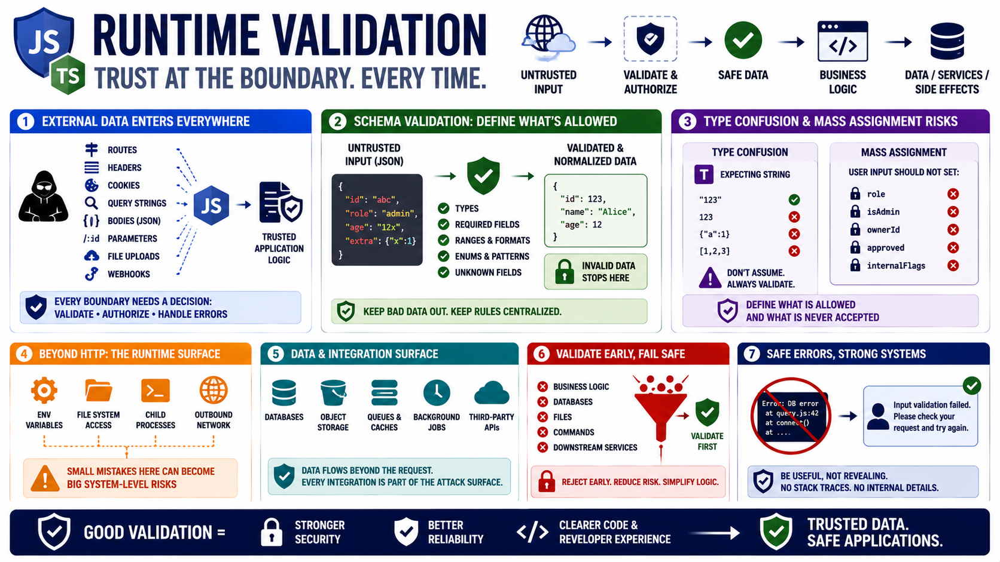

Input Validation and Data Handling
Connecting to LMS... Progress: in progress

Narration
JavaScript and TypeScript applications still need runtime validation because external data arrives at runtime. TypeScript can help developers reason about code, but it does not prove that a request body, query parameter, route parameter, header, cookie, or webhook payload matches the expected shape. JSON parsing only proves that data is parseable, not that it is safe, authorized, complete, or meaningful.
Schema validation gives teams a clear way to define expected fields, types, formats, ranges, and constraints. It can reject unknown fields, normalize allowed values, and keep invalid data away from business logic. This is especially important in APIs where clients may send extra fields, nested objects, unexpected arrays, or values that look harmless until they reach a database query, file operation, or downstream service.
Type confusion and mass assignment are common design risks. Type confusion happens when code assumes data has one type or shape but receives something else. Mass assignment happens when user-controlled fields can set properties that should not be user-controlled, such as roles, ownership, approval status, or internal flags. Validation should define both what is allowed and what must never be accepted from the client.
Validation should happen before data reaches business logic, databases, files, commands, or downstream services. Error responses should be useful but not revealing. A client can be told that input failed validation without receiving stack traces, internal schema details, database messages, or implementation paths. Good validation improves security, reliability, and developer clarity at the same time.